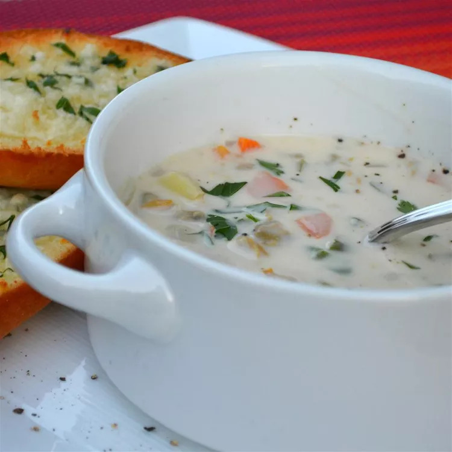

This delicious clam chowder is cream-based and
calls for the traditional chowder ingredients:
onion, celery, potatoes, diced carrots, cream,
and clams. A little red wine vinegar is added
before serving for extra flavor.
Did you know you can make restaurant-worthy clam
chowder at home? Well, you can! This top-rated
clam chowder recipe creates rich, smooth, creamy,
and wonderfully flavorful results every time.
How to Make Clam Chowder
You'll find a detailed ingredient list and
step-by-step instructions in the recipe below,
but let's go over the basics:
Ingredients
- 2 cups cubed potatoes
- 1 cup diced carrots
- 1 cup diced celery
- 1 cup minced onion
- 3 (6.5 ounce) cans minced clams, drained with juice reserved
- water to cover
- 3/4 cup butter
- 3/4 cup all-purpose flour
- 1 quart half-and-half cream
- 2 tablespoons red wine vinegar
- 1 1/2 teaspoons salt
- ground black pepper to taste
Steps
- Place potatoes, carrots, celery, and
onion into a large skillet; pour in
clam juice and add enough water to cover.
Cook and stir over medium-low heat until
vegetables are tender.
-
Meanwhile, melt butter in a large, heavy
saucepan over medium heat. Whisk in
flour until smooth. Whisk in cream and
stir constantly until thick and smooth.
Stir in vegetable mixture with any juices
until just heated through.
-
Stir in clams just before serving. If they
cook too much they get tough. When clams
are heated through, stir in vinegar and
season with salt and pepper.